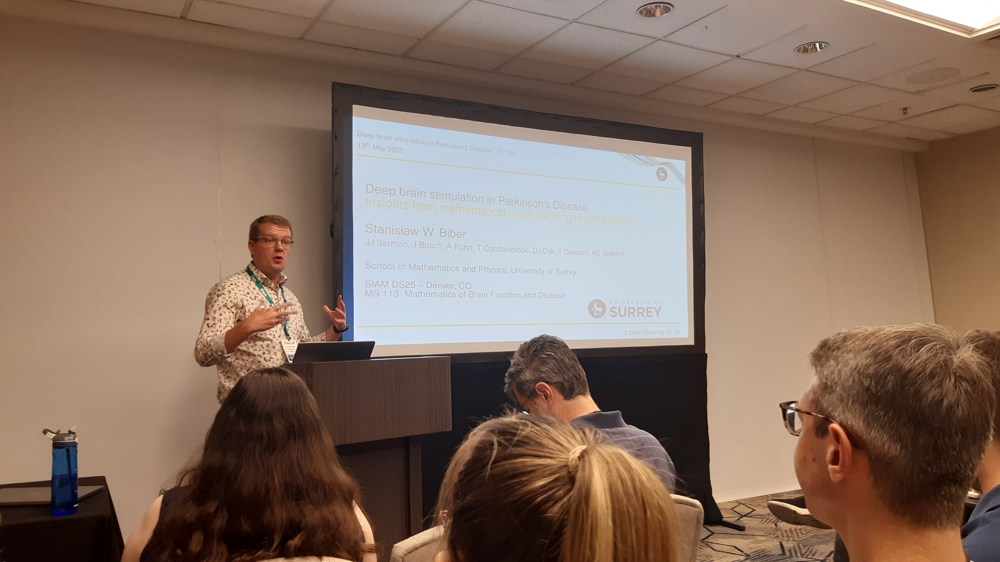
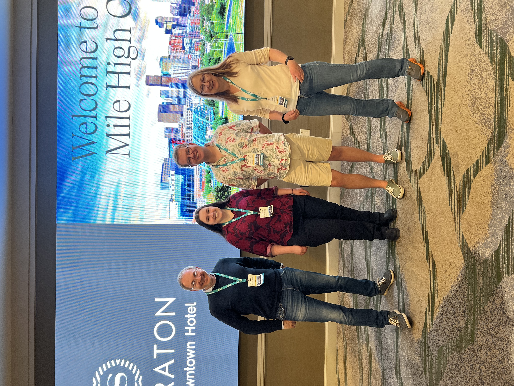
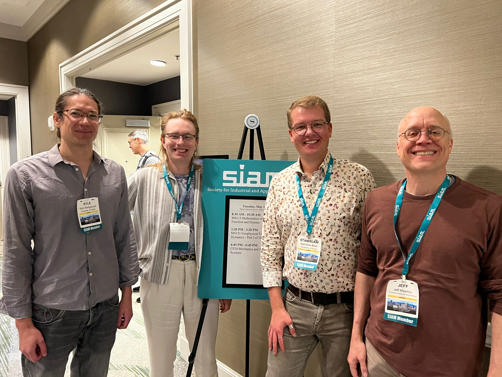
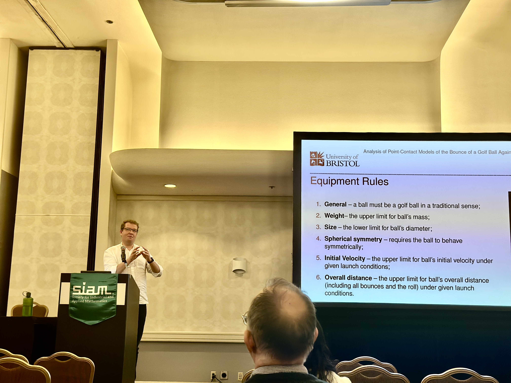
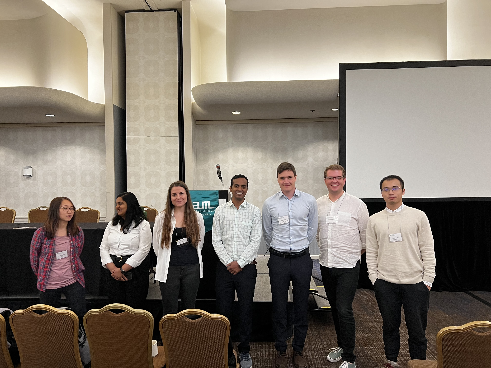
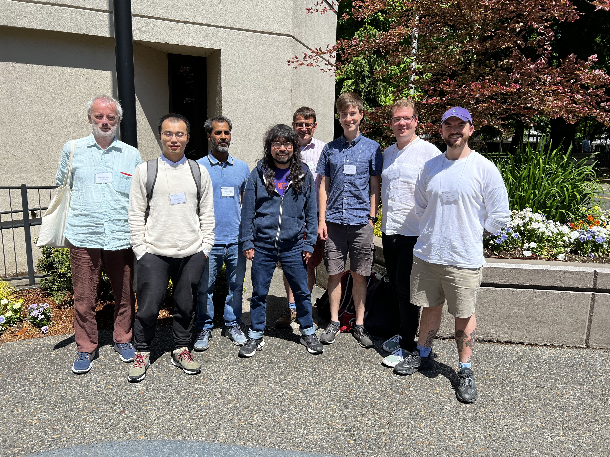
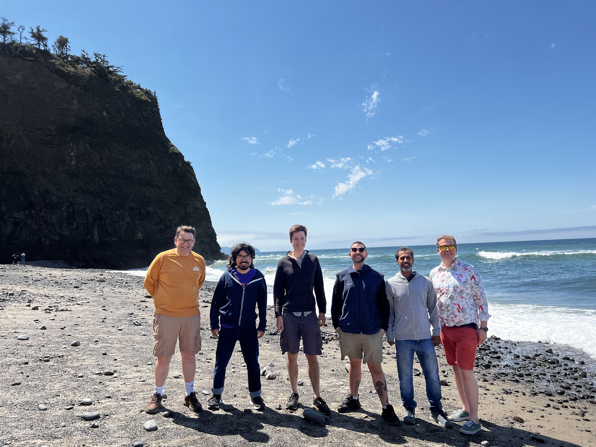
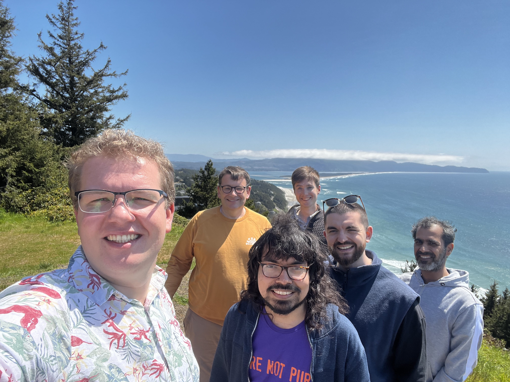

Back to Blog
15th May, 2025
Being human, and a creature of habits, by now I am growing to have a regular schedule of meetings and conferences I attend. Indeed, it evens tickles your ego a bit when you have been attending some of the conferences for a number of years and start getting recognised, or even more so, people choose to come to your talks and presentations because they want to hear from you! Next month I will write a bit about my favourite domestic conference (spoiler alert, I will be writing about BAMC), but for now, let me jot down some thoughts about my favourite international conference -- Society for Industrial and Applied Mathematics' conference on Applications of Dynamical Systems.
First, an element of sentiment. I cannot recall exactly when I have first heard of SIAM and the work they do. I became a student member of the Society in the early days of my PhD (and thanks to them for offering free student memberships!). The first SIAM DS conference I was able to attend and present at happened very unfortunately in 2021. The conference was held online that year, which I must admit, I do not speak fondly of. Participating in a conference organised in a US time zone, while being in the UK did not go well and there were very few take-away points for me. Having said that, I did meet people who became my PhD examiners there and a paper idea has been formed at the time as well (albeit, the paper is still in cooking 4 years later).
SIAM DS conferences are clearly of high calibre, which is apparent by a long list of high-profile speaker and excellent plenaries. But at the same time, blended with the well-established professors and mathematical rock stars are graduate students, PhD candidates and early-career researchers, such as myself. Being able to make your research known, gain feedback, suggestions and encouragement is an invaluable experience which, without a doubt, shaped many researchers. I was glad to hear the last plenary speaker at this year's conference (Prof. Peter Ashwin) reminisce how he would have never thought 20 years ago when he was attending a SIAM conference. For now, I cannot imagine delivering a plenary (ever), but constructive criticism and good inquisition is something we need to cherish in academia, and I think SIAM DS conferences do it particularly well, as it shapes some great researchers.
The night before I wrote this, I was also wondering about the social aspect of conferences. I am sure that for many the social occasions seem like a frivolity, or almost the part of the conference that should remain not spoken about. However, I have attended dinners with professors as well as mentoring sessions at this year's conference, and it was the dinners (and drinks) which gave me far more of an insight into global academia, career pathways and focus points than any structured mentoring session ever had. Once again, be it drinks, lunches, dinners or anything else, social interactions in a relaxed environment, is something we need promote as much as we can.
Right, so following some general remarks, let me now mention a bit about what I did at SIAM DS25. Together with my colleague (and officemate) Aravind Kumar Kamaraj, we proposed a minisymposium on Mathematics of Brain Function and Disease. Little did we know that the conference itself had at least a dozen of other symposia on very similar topics on neuronal dynamics and their pathologies! Although we proposed our minisymposium at a very last minute, we still managed to find a great line up of speakers (whom I cannot thank enough for presenting). Sadly, Aravind had to pull out of the conference at a later time, and did not get to see the effects of our work.
I have quickly noticed in the programme that the organisers put us in a room with a relatively small sitting capacity... I saw that as an estimate of low attendance at our minisymosium, and as such I got quite pleased when the room not only filled up, but also had people standing in it! It was quite an ego-boosting moment, but also a moment for me to understand that I am now working on a hot topic, one that many will show interest in, and one where I am standing on the shoulders of some amazing giants.
Once again, no matter how much literature you read, if you spend time on social media (even the scientific ones), you are unlikely to appreciate how your project fits globally until you see it live, and that is something that a global conference (such as SIAM DS) can deliver. And I am so proud, happy and honoured to have been a part of it again.
Let me add a bit of a contrast to the otherwise very positive message. I have seen many cancellations of talks this year, also at a very last minute. What's the reason? Well, sadly it's the political climate. It is rather upsetting to see genuine researchers, thriving in their institutions, being stopped from coming to another country to discuss science. If it was a matter of a single visa rejection, I would be hesitant to mention it. But given that these stories are quite frequent, one must pause and wonder about this alarming trend. And you cannot stop and realise how politics is trying to influence science (again?) and wonder what is the way out. It is a good time for the universities around the globe to consider their (scientific) integrity vs. the desire for income, and for scientific societies to consider how one can stay detached from political statements.
I hope to be a part of SIAM DS again in 2027 in Atlanta, GA. For now, I can keep on working with the new boost of motivation, new tools I have learnt about, and taking directions I would have not otherwise thought of.
You can also read the entry about our minisymposium on the Surrey Maths Research Blog.








σβ
Last updated: 15th May 2025
Back to Blog